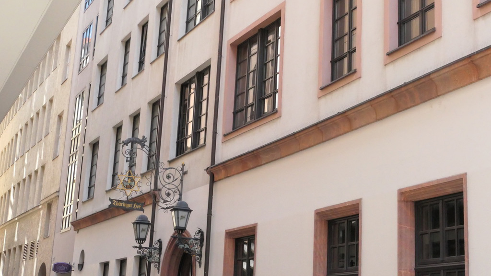
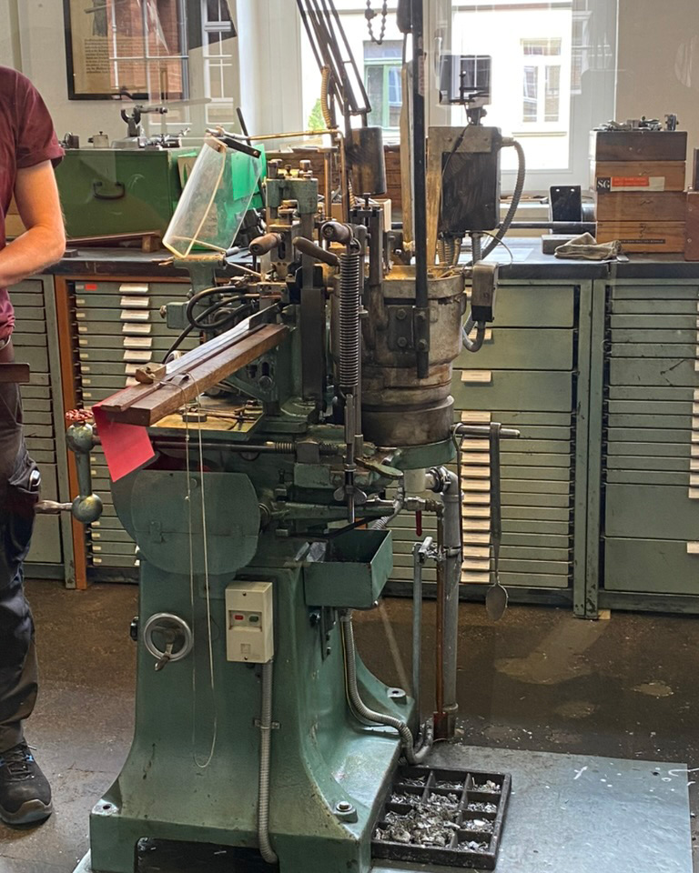
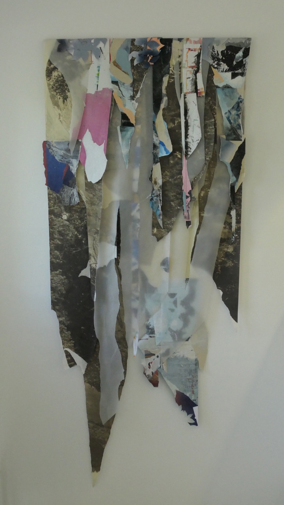
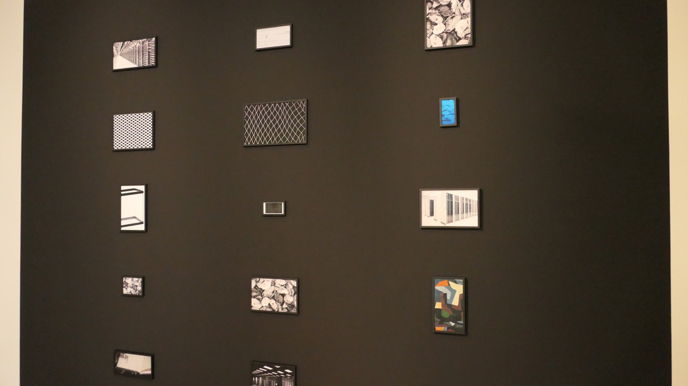
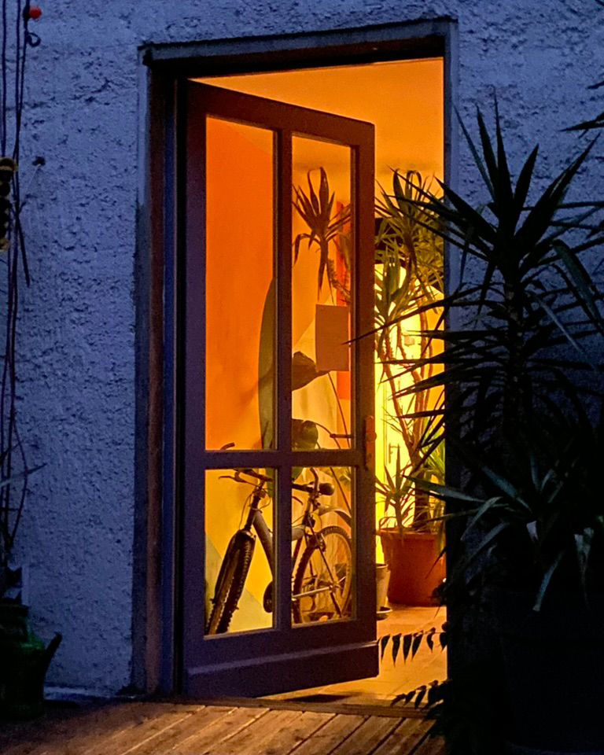
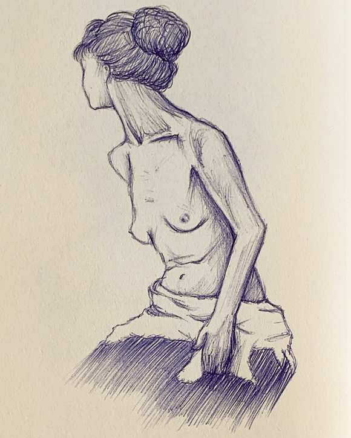
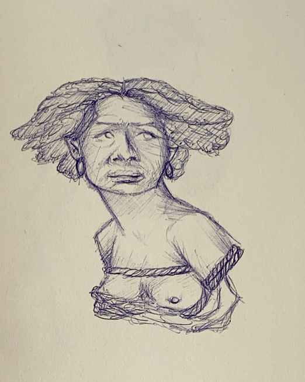

Beautiful windowsOn our first day in
Leipzig, we started by exploring the city
center. I took lots of pictures and tried
my hand at drawing. Here you can see several
passages. It was worth looking up every time. Windows in the museum
Beautiful PassageThis passage here has
great art on the walls. The mosaic shimmers
in the sunlight.Beautiful Passage
Beautiful PassageCity HallCity Hall
City HallHere you can see the
new Leipzig City Hall from different angles.
The foundation stone was laid on September 19,
1899 and the destruction caused by the air
raids on Leipzig during the Second World War
on December 4, 1943 was repaired by 1949.
Today it is a beautiful historic building
with a beautiful archway and small turrets. City Hall

Passage WallThe next day we were
also in the city center of Leipzig.
On our way out of it to the
Gallery of Contemporary Art (Gfzk), I
discovered some cute ducks. We also
passed the Kunsthalle.Art Gallery
Fassade in GoldCute DucksCute Ducks
Museum of Printing Art Leipzig
In this museum,
we gained many insights into the history
and development of printing. The tour
started with the various printing processes,
such as relief and gravure printing. But
there is also screen printing. Then we looked
at one of the first printing presses.The EntranceFor example,
a motif was placed on it using gravure
printing. Only the higher parts of the
motif received the ink. Once this was
clamped into the device on the canvas
and pressed against the canvas, the motif
was printed on the canvas.
The PressOn our first day in
Leipzig, we started by exploring the city
center. I took lots of pictures and tried
my hand at drawing. Here you can see several
passages. It was worth looking up every time. Placing the Canvas
Placing the MotifPressing the MotifThe Result
Casting Letters ManuallyHere you can see how
the letters and motifs were first created
by hand in a process. They were created
using a lead casting process.Casting Letters Manually
Letter Casting MashineNext, we looked at
the first machine that could now cast
the letters.

Letter Casting Mashine
We were also allowed
to print something ourselves. There was
the SEE YOU SOON motif... See You Soon Print...and the DOG motif.
PrintmachineFirst insert the
paper and then press down the lever on
the left-hand side. Press briefly and
then release again. Now you can see
the motif on the sheet.Dog Print
In these pictures
you can see how the lead letters were
stored. There were so-called letterboxes,
which were stored on shelves with many
thin drawers.The LetterboxThe Letterbox
The BookprintThe BookprintIn the next line
of images you can see the so-called
linotype. This is the most modern of
the printing machines we were shown that
day. There is a kind of keyboard here
with which you could type words. These
words were then formed into a line
lengthwise. Just like a page in a book.
When a book page was finished, you could
take out this template and use it as many
times as you needed.
The LinotypeThe LinotypeThe Linotype
The LineAt the end of our
visit there, we did a workshop. Here we
were allowed to lay a line of text by
hand on a letterbox. This line was then
printed with a motif of our choice. The Result
The Gallery for Contemporary Art

The CollageThe Fancy RoomThe Fancy Room
The Fancy RoomWe visited this
museum of contemporary art the next day.
Sometimes the art made little sense to me,
but you can definitely see how some
artists have taken an experimental
approach to their art.The Photographer
The CarpetsOn TheWall
The Geometric SculptureThe Hanging Sculpture

The Wall of Pictures
Sculpture Hanging From CeilingThe Colorful Old Floor LampsThe Office To Go/Portable Office
Here some Drawings and other stuff from the hostel

Hostel DoorHostel PlantMe In The Hostel
Museum Ceiling

Study Of A Nude

Why Born Enslaved